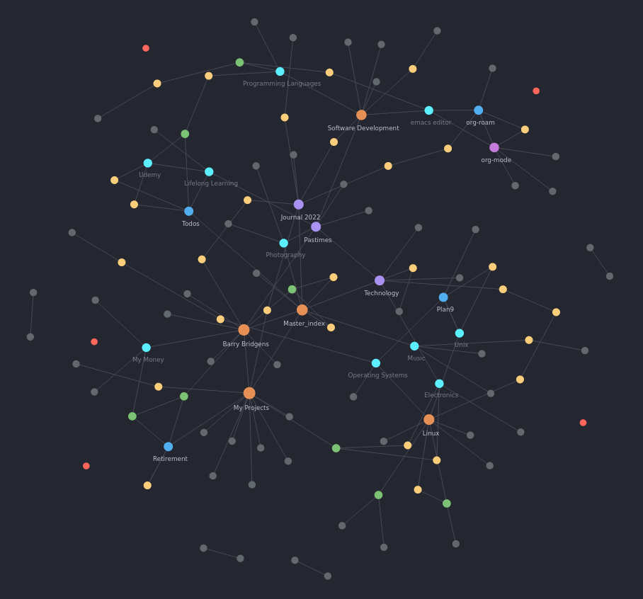
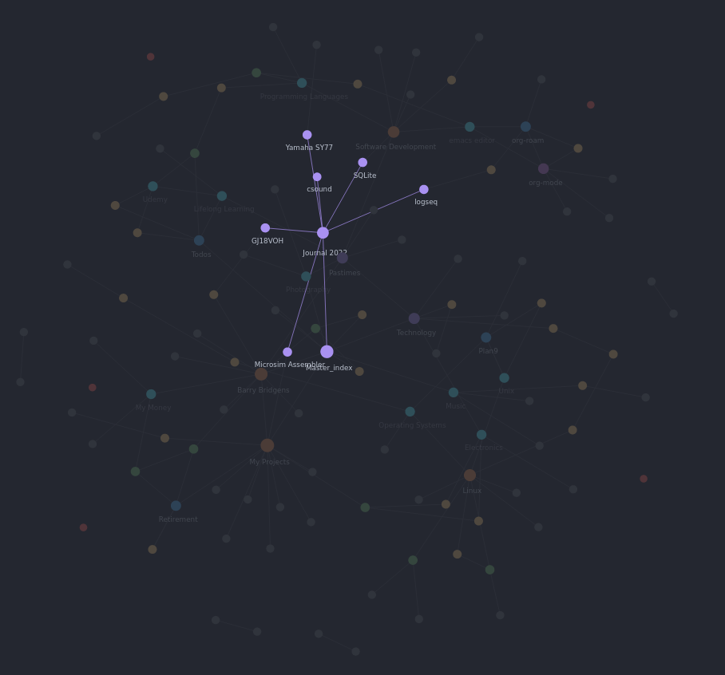

org-roam-ui
In my last post I talked about using org-roam as my note-taking solution of choice. This is still working well for me but I found myself missing the "fully featured" graph functionality available in Obsidian and similar systems. I looked around for a solution and found org-roam-ui
org-roam-ui is an extension to org-roam that provides a server that generates a graph view of your org-roam data as a dynamic website. This can then be interacted with via a browser.
 org-roam-ui Screenshot
The above screenshot shows the graph displayed for my current org-roam data. Using the browser you can zoom and move around and see the relationships between your nodes.
 org-roam-ui Screenshot 2
The second screenshot shows how hovering over a node highlights the direct connections to that node. This helps to understand the structure of your notes.
Right clicking on a node allows that note to be previewed, opened in Emacs or other actions triggered.
org-roam-ui is a valuable visualisation tool that makes org-roam so much more capable, especially for visually oriented people.